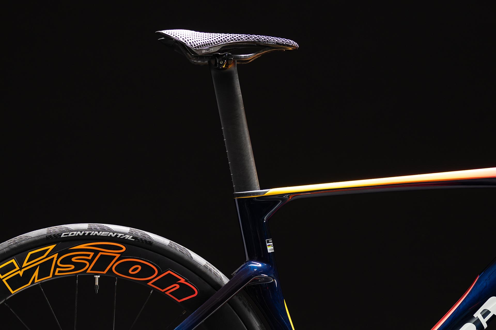

Drali Milano
Route · AéroLe modèle aéro de la gamme Drali Milano. Un cadre de 890 g en taille 54, sans peinture, pour un vélo rapide et léger. Comme chaque vélo du studio, il est monté à la carte, selon vos envies et votre position.
À partir de5 890 €
Demander des informations